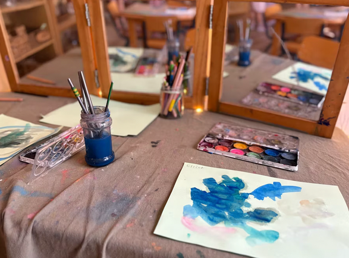
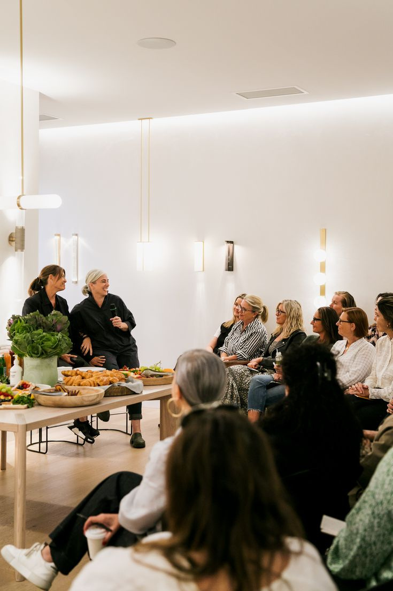

Career Coaching
One-to-one coaching to clarify your calling, navigate change, and align your work with your faith and values.
Explore career coachingInspired With Grace
Helping women design purposeful, faith-filled lives with confidence, clarity, and grace.
A different definition of growth
Donna helps women rediscover who they’re called to be—not just what they’re supposed to do.
Whether you’re discerning a career move, rebuilding after a transition, or longing for a more balanced and intentional life, you don’t have to find your way alone.
Meet Donna Laggui Crombie
I’m Donna Laggui Crombie—your grounded guide.
Through faith-based coaching and workshops, I help women make confident, Christ-centered decisions in every area of life.
Ways to work together
One-to-one coaching to clarify your calling, navigate change, and align your work with your faith and values.
Explore career coachingFaith-based support to navigate transitions, create balance, and set realistic, grace-filled goals.
Explore life coaching
Donna Laggui Crombie speaks and facilitates faith-based experiences. Past topics include Paint n’ Pray, Lectio, and guided reflection.
Invite Donna to speakYour story matters
You’re driven. You’re educated. You’ve worked hard to build a life that matters.
Donna Laggui Crombie offers Career & Life Coaching for Catholic women and those drawn to faith. You’ll leave feeling grounded, renewed, and reminded that your voice and your story matter.
Featured contributor
Stories of Redemption, Healing, and Growth
Donna Laggui Crombie is one of the contributing storytellers in Sacred Wounds, a collection of women’s stories of redemption, healing, and growth. In its pages, she shares part of her own journey alongside many other voices.
Donna Laggui Crombie is honoured to be featured in this multi-contributor collection.
Learn about the book
Begin with a conversation about where you are, what’s changing, and the life you feel called to build.
Book a complimentary call